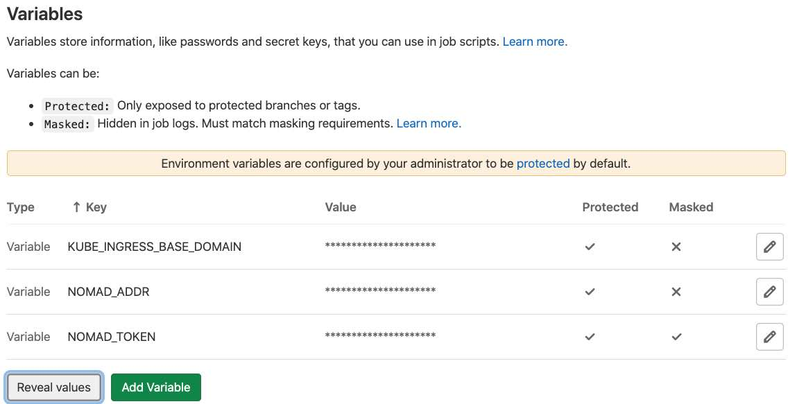

# 🚂 DevOps Training
## Week 7
### Apr 7, 2021
Slides: https://archive.org/~tracey/slides/devops/
---
## Overview
### Add GitLab Runner & Setup full CI/CD pipelines
---
## Don't forget!
### press record
---
## Attendees
tracey, matt, clau, drini, jason,
sawood, christian, charles, arkiver
---
## Back to your VM
find your VM IP address:
```bash
host git.x.archive.org
# git.x.archive.org has address 143.198.100.155
```
ssh back in and reload your env vars/settings
```bash
ssh -A root@143.198.100.155
source .env
```
---
## Gitlab Runner Setup
```bash
docker run --detach \
--net=host \
-v ${GITLAB_HOME?}/runner:/etc/gitlab-runner \
-v /var/run/docker.sock:/var/run/docker.sock \
--name gitlab-runner \
--restart always \
gitlab/gitlab-runner
```
⭐ docker network mode: `net=host`
⭐ docker volume: `/var/run/docker.sock`
---
## Make a GitLab Group
- https://git.x.archive.org
- very top menu, center, hit [+] button
- [New group]
- name it 'ia'
---
## Import a Repo
Find your "Hai Whirled" repo from a prior week here:
https://git.archive.org/www
You can alternatively use & download:
[bai.tar.gz](https://archive.org/~tracey/downloads/bai.tar.gz)
(from [gitlab IA](https://gitlab.com/internetarchive/bai) )
---
## Export Your Repo
- [Settings] (left-hand menu)
- [General]
- [Advanced] (bottom)
- [Export project]
- hit [Export project] button
---
## Import Your Repo
- https://git.x.archive.org/ia
- [New Project]
- [Import project]
- [Gitlab Export]
- fill out... then [Choose File]
- [Import project] button
---
## Setup Runner
- https://git.x.archive.org/ia
- [Settings] (left-hand menu)
- [CI/CD]
- [Runners]
- [Group runners]
- [Setup a group runner manually]
- we'll use the URL & registration token right side 📋 buttons next
---
## GitLab Runner register
```bash
docker run --rm -it \
-v ${GITLAB_HOME?}/runner:/etc/gitlab-runner \
--net=host \
gitlab/gitlab-runner -- register \
--executor docker \
--docker-image "docker" \
--docker-network-mode "host" \
--docker-volumes /var/run/docker.sock:/var/run/docker.sock
```
---
## GitLab Runner register
- use 📋 URL button from your group page https://git.x.archive.org/ia
- use 📋 token button from your group page https://git.x.archive.org/ia
- [return]
- [return]
- [return]
- [return]
---
## GitLab Runner register
You can rerun the prior 2 slides with as many groups or projects as you like.
Runner **reaches out** to GitLab.
---
## Update project CI/CD config
- https://git.x.archive.org/ia
- find your repo
- *ADD* the `build` stanza below to your _existing_ YAML - to look something like:
```yaml
include:
- remote: 'https://gitlab.com/internetarchive/nomad/-/raw/master/.gitlab-ci.yml'
build:
stage: build
# kill docker-in-docker
services:
before_script:
- export AUTO_DEVOPS_BUILD_IMAGE_EXTRA_ARGS="--network=host"
```
---
## GitLab Pipelines 🚀
- https://git.x.archive.org/ia
- find your repo
- [left menu]
- 🚀 [button]
- should be running now, or:
- (upper right) [Run Pipeline]
- [Run Pipeline] button (defaults to master branch)
---
## CI/CD
Continuous since automatic from git commits & push
- Continuous Integration
- [build] [test]
- Continuous Deploy
- [deploy]
---
## GitLab Pipelines 🚀
- [build] & [test] (optional) phases should run now
- [deploy] is next
---
## add CI/CD vars
- add to your group, eg: https://git.x.archive.org/ia
- that way, any/all projects inherit them
- Left side menu
- ⚙️ [Settings]
- [CI/CD]
- [Variables]
- NOMAD_ADDR
- NOMAD_TOKEN (masked)
- BASE_DOMAIN = x.archive.org
---
## add CI/CD vars

---
## new project pipeline
- find project at https://git.x.archive.org
- [Left Menu]
- 🚀 Pipelines
- [Run Pipeline] button (upper right)
- [Run Pipeline] button (lower left)
---
## new pipeline
- ideally, pipeline success
- find [deploy] phase
- scroll to bottom
- click URL with your hostname
- ideally, https clean & working
- wait 30s and retry if not
---
## example webapp url
- your url is likely this or something like this:
- https://ia-bai.x.archive.org/
---
## want more?
- Secrets, tokens, passwords for your repo?
- Persistent volume for your repo?
- Add more nomad/consul nodes to your cluster?
- and more!
Visit: https://gitlab.com/internetarchive/nomad
---
## Congratulations!
## ⭐ ⭐ ⭐
## 🐢🚀
---
## Feedback
Over the course of this series so far...
---
## What do you feel you’ve learned?
- What can you do now that you couldn’t before?
- What would make the sessions more useful for you?
- Is this accomplishing the goal of being able to handle things while Tracey goes to Burning Man?
---
## FeedBack
- hard to know what all the questions are
- interested in 'chaos monkey'
- where are the logs? docker ps/status? gui help
- idea: scavenger hunt w/ issues and teams of 2-3 to figure out
- NOMAD ESCAPE ROOM!
- timezones / people can do on own, too
- list what are things most likely to wrong?
---
## FeedBack
- so many issues on local machines (eg: win/linux -v- mac)
- "introducing friction" could be helpful to get things stick
- list of server names & roles
- access, ssh & sudo
- what if jason is _also_ at Burning Man?
---
## FeedBack
- more explicit mapping of what we did -v- production
- know exactly where GL or runner config files live
- nomad logs, config, etc.
- key differences between sessions & production
- different DNS, security lockdowns, certs, etc.
- where do certs come from?
---
## FeedBack
- concern about when these sesssion all "page out" of the mind over time
- "runbooks"
- 1st check here
- next here
- "a runbook contains procedures to begin, stop, supervise, and debug the system. It may also describe procedures for handling special requests and contingencies. An effective runbook allows other operators, with prerequisite expertise, to effectively manage and troubleshoot a system."
---
## FeedBack
- more documentation - that anyone can edit and fill out
- (like UX guidelines)
- if find something out/missing - can add section
- others can refine, etc.
- README.md, etc.
---
## FeedBack
- copy/paste is one thing, and 50% can brain vanish days later
- specific projects or goals/tasks
- arkiver learned a ton from needing to reset bootstrap ACL
---
## FeedBack
- extra 'value' from mistakes having to figure out and catchup
- boilerplate probably a bit too easy to not fully grok
- label boilerplate a bit more
---
## FeedBack
- piece-by-piece config setup
- maybe complete file w/ embedded comments
- annotate what we have in production
- could compare the two
- annotations++ w/i prod config files would be good!
---
## FeedBack
- trying to remember where config lives
- and what the boilerplate pieces mean